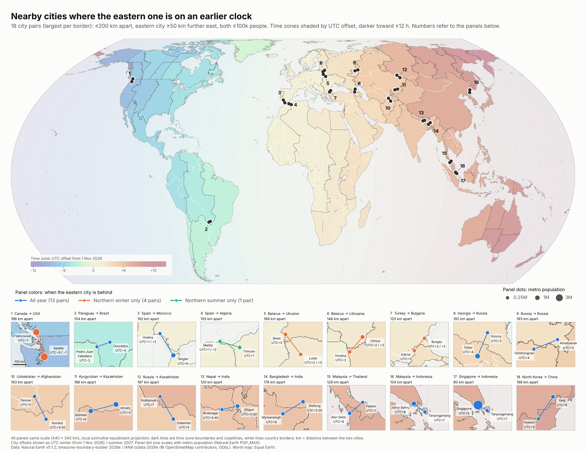

Backwards clocks
From 1 November 2026, driving from Seattle to Vancouver takes you about 200 km north and 60 km west — yet you set your watch an hour ahead, as if you'd travelled east.
British Columbia stopped changing its clocks in 2026 and now stays on UTC−7 all year, while Washington State still falls back to UTC−8 each winter. So from November to March, Seattle is an hour behind its neighbour to the north-west. How unusual is that? This map finds every pair of nearby cities in the world where the more easterly one keeps the earlier clock.

The 18 pairs
| # | Western city | Eastern city | Apart | Further east | Eastern clock, winter | Eastern clock, summer |
|---|---|---|---|---|---|---|
| 1 | Vancouver Canada | Seattle USA | 196 km | 60 km | 1 h behind | same time |
| 2 | Pedro Juan Caballero Paraguay | Dourados Brazil | 104 km | 98 km | 1 h behind | 1 h behind |
| 3 | Huelva Spain | Tangier Morocco | 192 km | 100 km | 1 h behind | 2 h behind |
| 4 | Melilla Spain | Tlimcen Algeria | 155 km | 148 km | same time | 1 h behind |
| 5 | Brest Belarus | Lutsk Ukraine | 189 km | 113 km | 1 h behind | same time |
| 6 | Hrodna Belarus | Vilnius Lithuania | 148 km | 96 km | 1 h behind | same time |
| 7 | Edirne Turkey | Burgas Bulgaria | 120 km | 75 km | 1 h behind | same time |
| 8 | Tbilisi Georgia | Grozny Russia | 192 km | 75 km | 1 h behind | 1 h behind |
| 9 | Dimitrovgrad Russia | Almetyevsk Russia | 193 km | 178 km | 1 h behind | 1 h behind |
| 10 | Denow Uzbekistan | Kondoz Afghanistan | 193 km | 87 km | 30 min behind | 30 min behind |
| 11 | Bishkek Kyrgyzstan | Almaty Kazakhstan | 196 km | 189 km | 1 h behind | 1 h behind |
| 12 | Rubtsovsk Russia | Oskemen Kazakhstan | 197 km | 99 km | 2 h behind | 2 h behind |
| 13 | Biratnagar Nepal | Siliguri India | 120 km | 116 km | 15 min behind | 15 min behind |
| 14 | Mymensingh Bangladesh | Shillong India | 176 km | 151 km | 30 min behind | 30 min behind |
| 15 | Alor Setar Malaysia | Pattani Thailand | 128 km | 97 km | 1 h behind | 1 h behind |
| 16 | Johor Bahru Malaysia | Tanjungpinang Indonesia | 104 km | 83 km | 1 h behind | 1 h behind |
| 17 | Singapore Singapore | Tanjungpinang Indonesia | 80 km | 69 km | 1 h behind | 1 h behind |
| 18 | Hyeson North Korea | Yanji China | 198 km | 109 km | 1 h behind | 1 h behind |
“Winter” is from 1 Nov 2026 and “summer” is July 2027, both in the northern hemisphere. Download the pairs as CSV.
How the pairs were chosen
The thresholds are anchored on Seattle and Vancouver, so every pair shown is at least as striking a case:
- Close together: no more than 200 km apart on the globe (Seattle–Vancouver: 196 km).
- Clearly east: the eastern city is at least 50 km further east (Seattle: 60 km).
- Backwards: the eastern city's clock is behind the western one's, in winter, summer or both.
- Real cities: both have a metro population of at least 100,000.
- One per border: where several pairs share a border, only the one with the largest smaller city is shown.
Each city was placed in its time zone using the boundary polygons, and clock offsets come from the IANA time zone database, release 2026e. That release includes 2026's Canadian changes: British Columbia, Alberta, the Northwest Territories and Manitoba all moved to permanent time. Distances are measured on the WGS84 ellipsoid.
Caveats: Natural Earth's list of populated places is chosen for cartography and isn't a complete census of every city over 100,000, so some pairs may be missing. Time zones follow the IANA database and OpenStreetMap, which may differ from local practice in disputed or occupied areas.
Data
- Countries and populated places: Natural Earth v5.1.2 (public domain).
- Time zone boundaries: timezone-boundary-builder 2026e, © OpenStreetMap contributors, available under the Open Database License.
- UTC offsets: IANA time zone database 2026e.